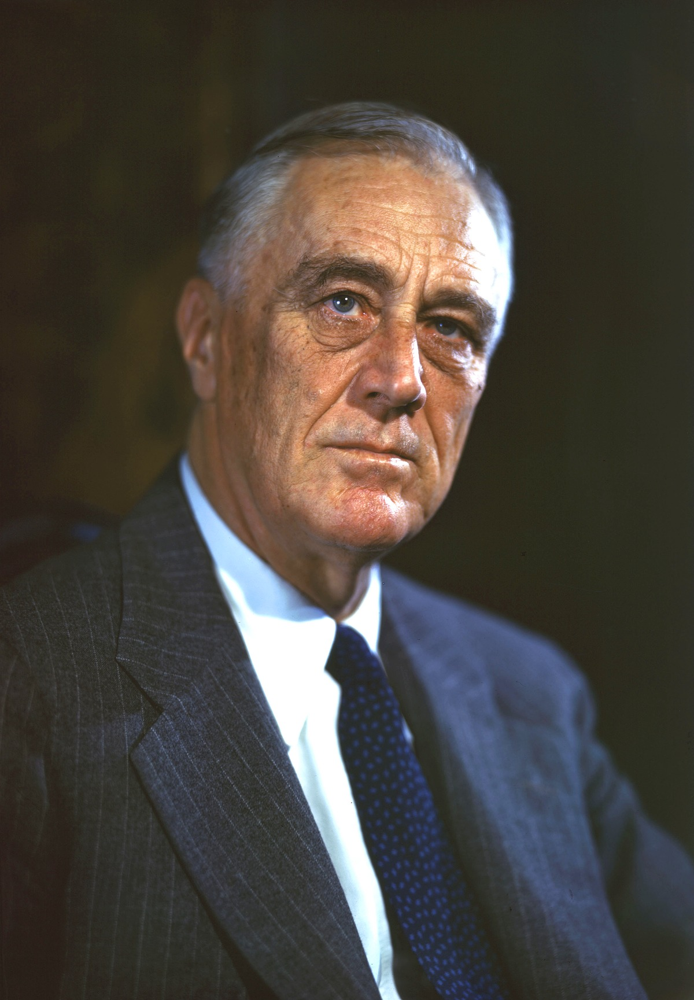

Соединённые Штаты Америки вступили во Вторую мировую войну 7 декабря 1941 года, после нападения Японии на Пёрл-Харбор — атаки японского авианосного флота на американскую военно-морскую базу. США объявили войну Японии, а нацистская Германия и фашистская Италия объявили войну США. Вооружённые силы США сражались против сил Японии на Тихоокеанском театре военных действий. Также вооружённые силы США сражались против германских и итальянских войск в Северной Африке с ноября 1942 года и в Италии с июля 1943 года, а затем, с июня 1944 года, сражались против германских войск во Франции, Бельгии, Люксембурге и Германии.
За период с 1941 по 1945 годы в Вооруженных силах США прошли службу 16 112 566 человек из которых погибли во Второй мировой войне 418 000 человек[1] и 671 278 были ранены. Также 130 201 американец числился военнопленным, из них 116 129 человек вернулись домой после войны.[2] Самые крупные потери для американской армии произошли при осуществлении Нормандской операции — высадке Второго Фронта в период с 6 июня по 25 августа 1944 г. — 20 563 погибших. После неё по количеству потерь идут Арденнская операция (декабрь 1944—январь 1945), битва за Окинаву, битва под Монте-Кассино и битва за Иводзиму[источник не указан 544 дня]. По состоянию на 2010 год, пропавшими без вести во время Второй мировой войны всё ещё числятся 74 000 американских военнослужащих[3]. Национальный архив США составил и опубликовал списки всех погибших и пропавших без вести американских военных[4]. По данным на 30 сентября 2023 года, в живых оставалось 119 550 ветеранов армии США, принимавших участие во Второй мировой войне[5].